CAD Model Portfolio of Teruteru
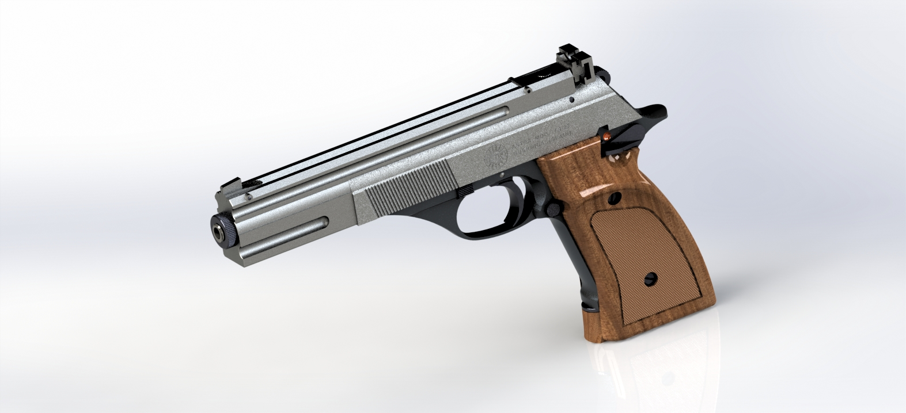
Astra TS-22
Pistol Astra Unceta, model TS-22 from 1987. Pistol created as a starter for precision shooting in late 70s. See: http://historiadelasarmasdefuego.blogspot.com.uy/2009/05/pistola-astra-mod-ts-22-cal-22lr.html
View Project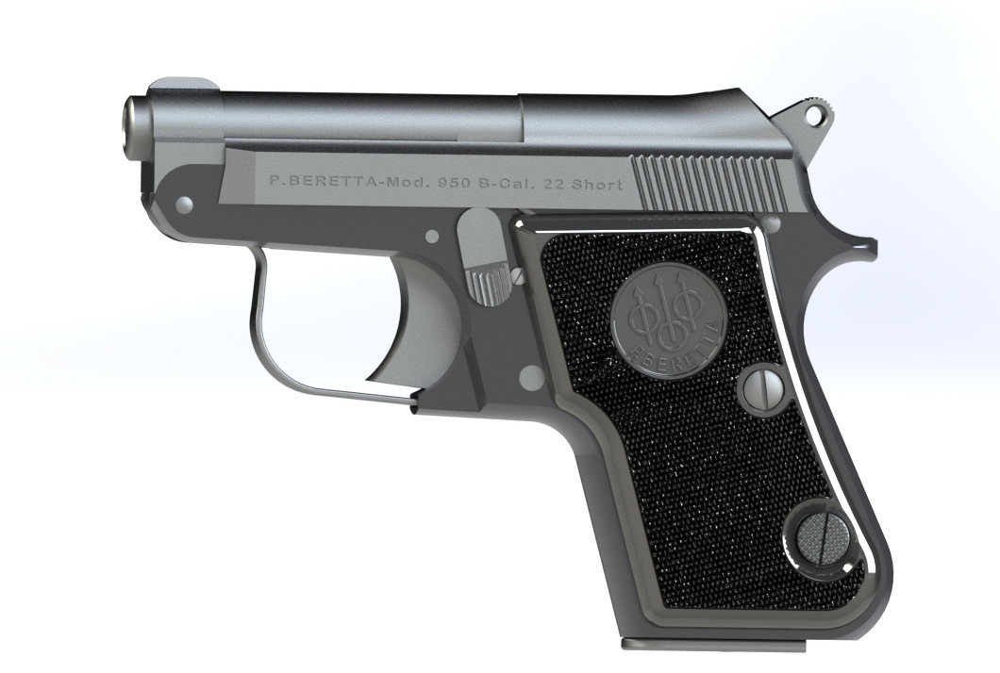
Beretta 950B Minx
Pistol Beretta 950-B "Minx", from 1960, in caliber .22 Short. After 1968 this model included an external safety. It was also chambered in .25 ACP caliber; in that case it was named "Jetfire"
View Project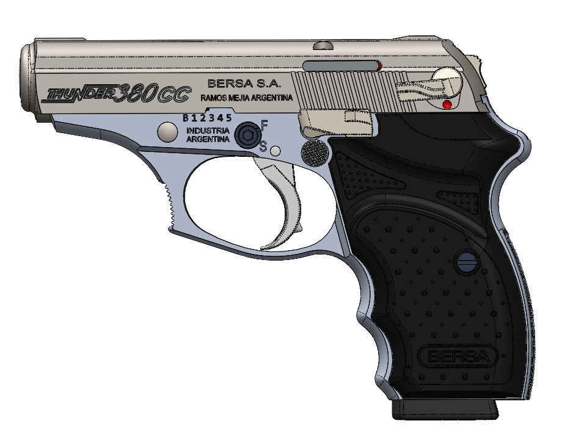
Bersa Thunder 380 CC
Bersa Thunder .380 CC (2011), one of the best concealed carry pistols nowadays.
View Project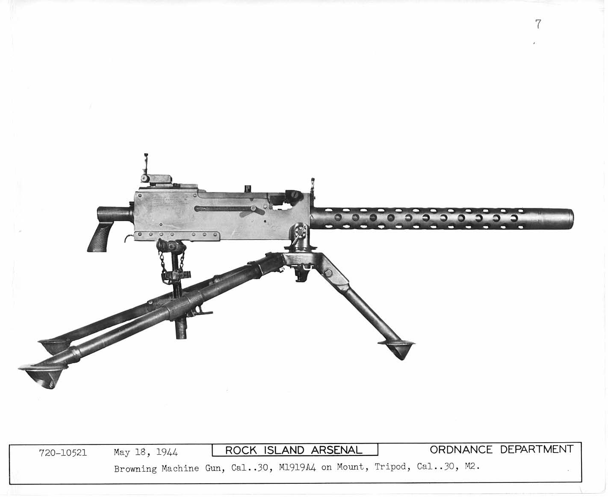
Browning M1919-A4
Browning M1919A4 machinegun, chambered in 30-06 Springfield caliber, used in WW2, Korea and Vietnam wars. There were several similar versions (i.e. M37), but this one is the oldest one. Complements previous models: C74620 Traverse & Elevation Mechanism (ca.1942) US Army M2 Tripod for .30 Machineguns (ca. 1940) Many thanks to Nap Bollemeijer for his original work. This is a correction, completion and assembly of all parts, based on original blueprints from Rock Island Arsenal, Ordnance Dpt. of the US Army.
View Project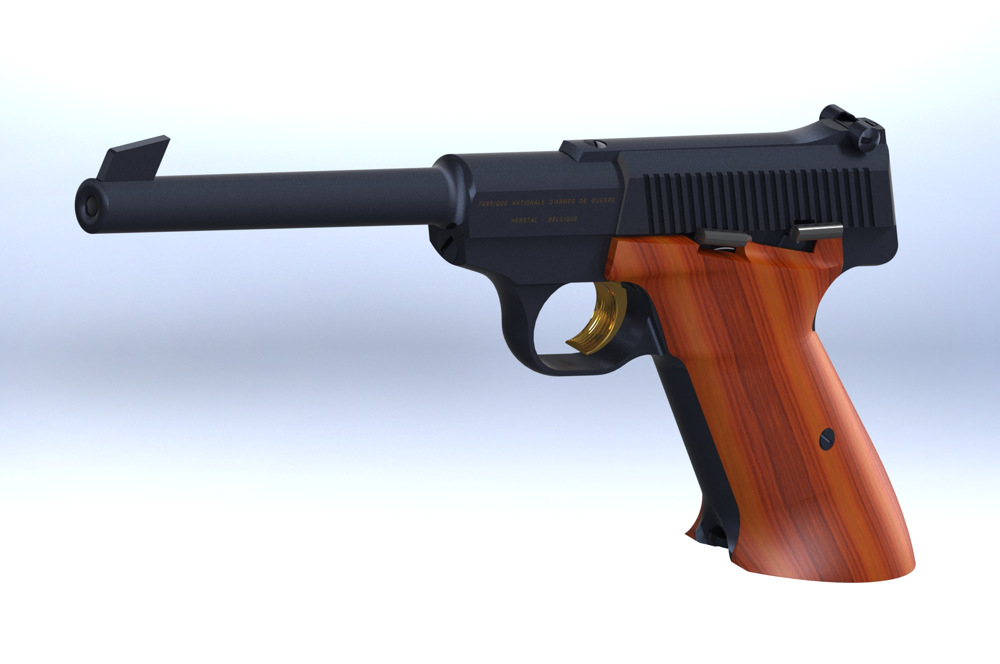
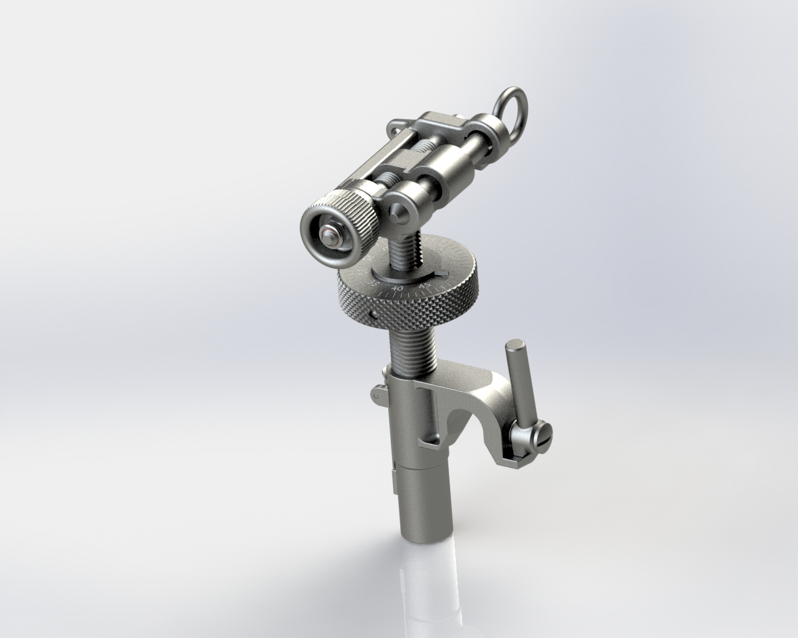
C74620 T&E
Model of the Traverse & Elevation mechanism for the 1940s M2 Tripod for .30 cal. Machinegun. Parts were modeled to milspec. Many thanks to Nap Bollemeijer for the blueprints, and his own model of this mechanism as a guide. See his work here: https://grabcad.com/nap.bollemeijer-1
View Project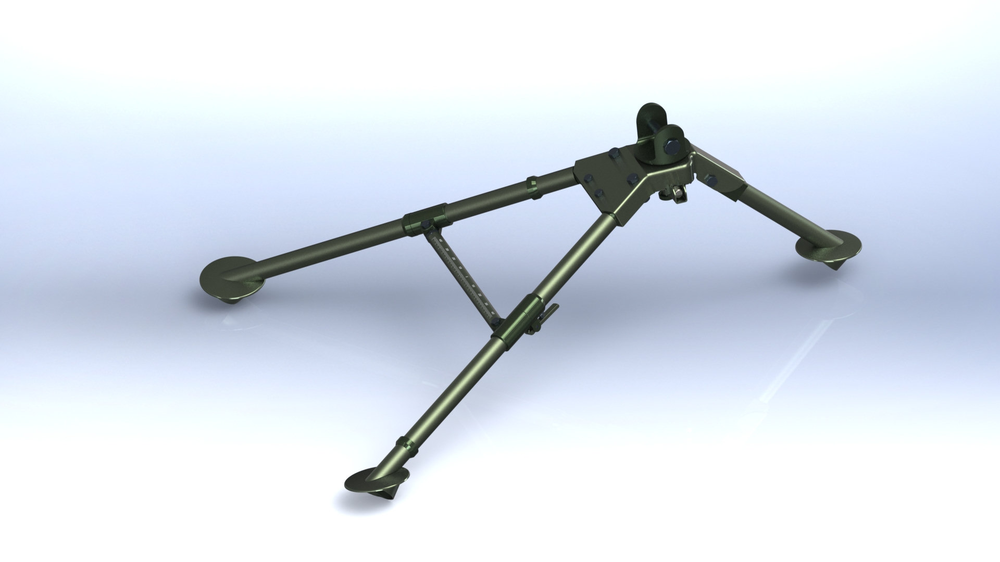
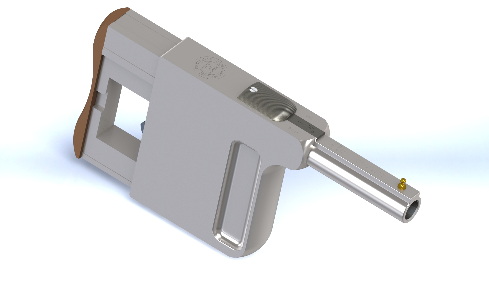
Gaulois Metrailleuse
St. Etienne Gaulois Palm Pistol. - 5 shot repeater. - Magazine fed from top. - 2 inch ribbed barrel. - 5.5 inches overall length. - Less than .5 inch thick. - 3 position safety, safe, fire and dismount[takedown]. If anybody has access to one of this babies, please contact me. I still need some construction details and dimensions.
View Project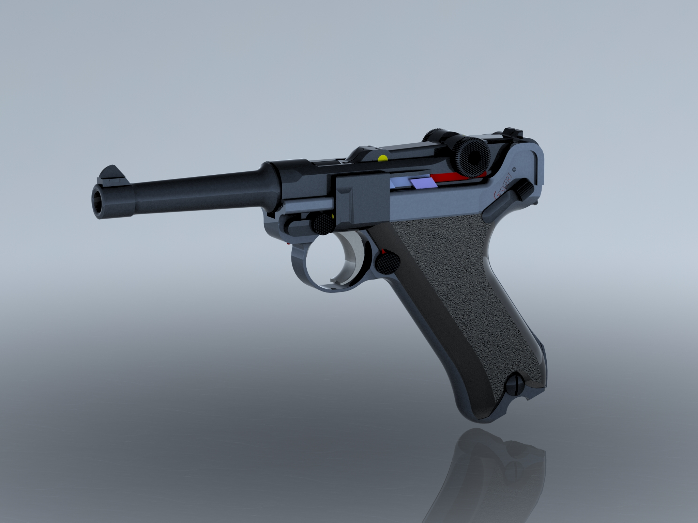
Luger P08
Started to be built in 1900, suffered many modifications thru the years. This is from a 1916 (very hard to read) blueprint.
View Project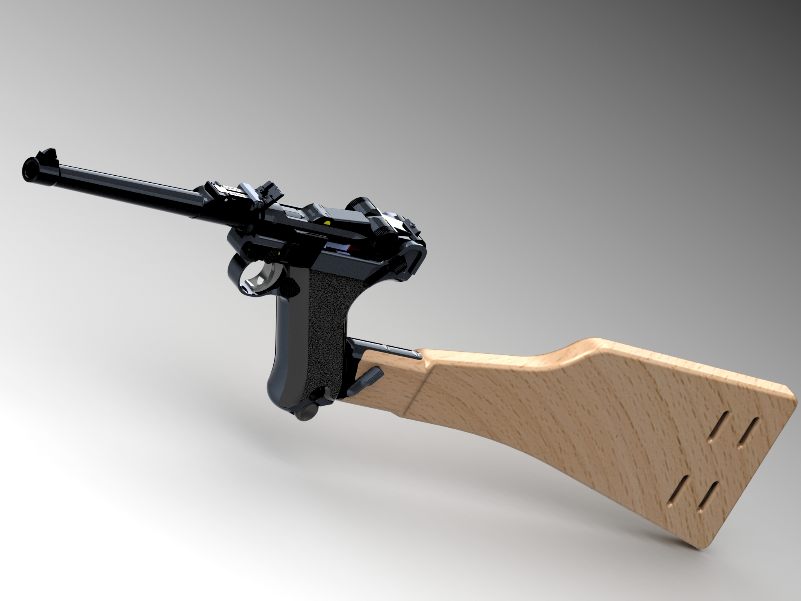
Luger P08
Known as "Carbine Luger" or Artillery Luger" it wasn't specific to those type of units. Not many specimen of this centenary baby exist nowadays. It was capable of 800 meters shots !! Luger engineering was so awesome that the tangent sight blade is tilted 7º from vertical to compensate the rifling effect on long shots.
View Project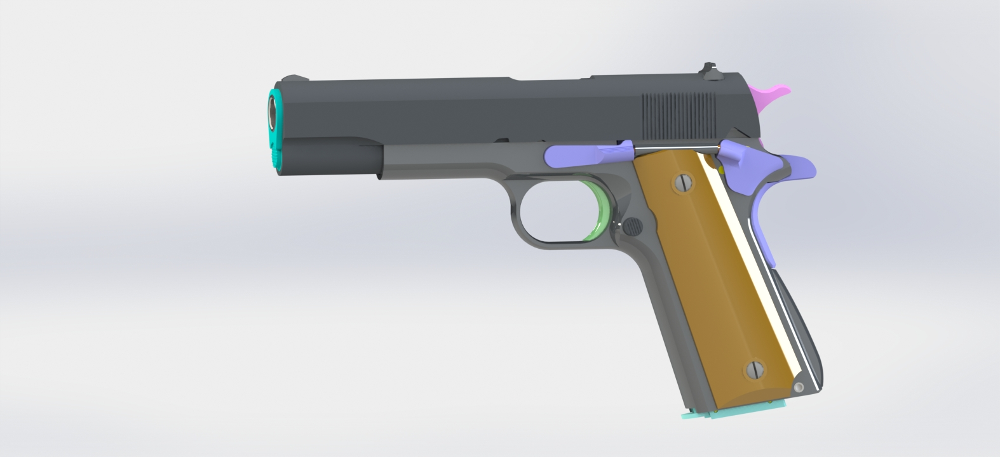
Colt 1911-A1
Colt 1911-A1 modeled from Rio Benson's Redux blueprint version. All parts detailed with corresponding part#
View Project
Modesto Santos 6.35
Spanish copy of a Browning patent from 1904, produced in the vasque city of Eibar around 1919. Note the "MS" logo seal in the center of the grips: if you put it upside down, is almost identical to current Smith & Wesons's.
View Project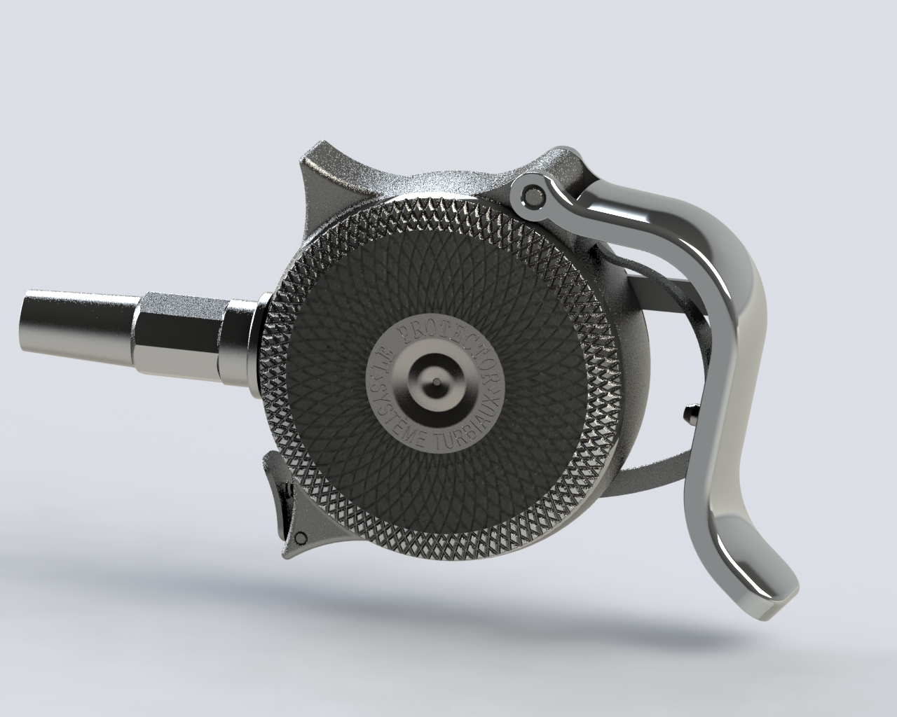
Protector 8mm
(from Wikipedia) The Protector Palm Pistol was first patented and built in France in 1882 by Jacques Turbiaux and sold as the "Turbiaux Le Protector" or the "Turbiaux Disc Pistol". Later in 1883 it was built in the USA as The Protector by Minneapolis Firearms Co.. Peter H. Finnegan of Austin, Illinois bought the patent in 1892 and founded the Chicago Fire Arms Co. to make and market the pistols. In anticipation of the World's Columbian Exposition in 1893, he contracted the Ames Sword Company of Chicopee, Massachusetts to manufacture 15,000 pistols. Ames made 1,500 of the pistols by the deadline of the exhibition. Finnegan sued for damages and engaged in a lawsuit with Ames. The company countersued and settled with Finnegan, but, through the years, had amassed a large production run of 12,800 pistols. The company sold the inventory and abandoned the design by 1910.[2][3][4] Remington manufactured the rimfire ammunition for this pistol, 32 Extra Short and alternatively 32 Protector, until 1920.[5] Most Protectors were nickel-plated to prevent corrosion from being carried in close contact with the owner. These guns were shipped with hard rubber inserts for additional protection. Some varieties came with pearl inlays and a small percentage were blued.[1]
View Project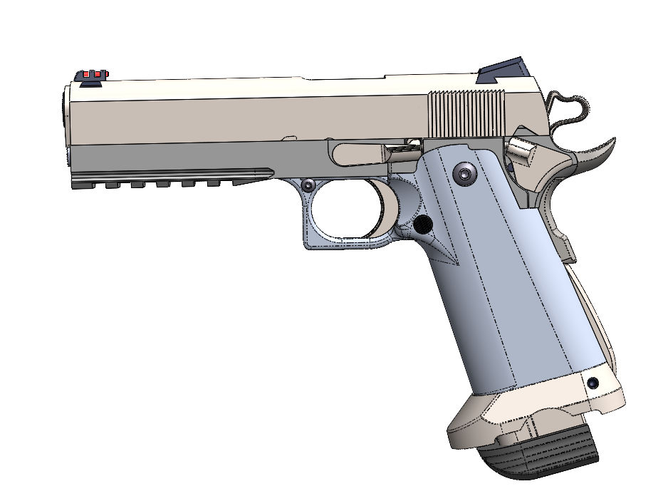
STI 2011
This is one of the many incarnations of the renewed .45 1911 pistol but with a double tier magazine for 13 rounds. It uses most of the standard Colt 1911 parts.
View Project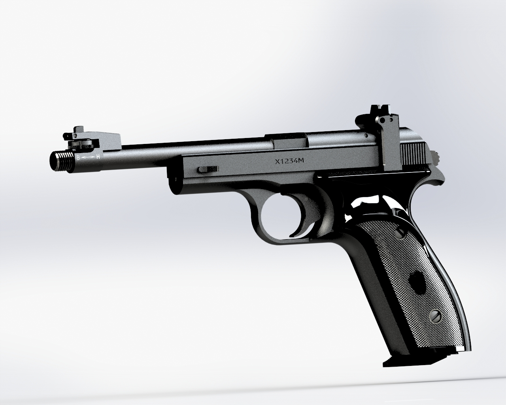
Margolin Vostok 22LR
This pistol was designed by Mikhail Margolin, a BLIND rusian engineer. It was produced since 1948 and made its international debut at the 36th World Shooting Championships held in 1954 at Caracas, Venezuela.
View Project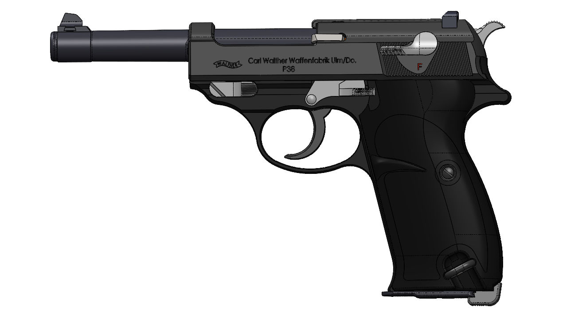
Walther P38
Every part was measured and modeled by me, from my own specimen, true to 0.1mm
View Project
Antares P6
Later model of an Antares P6 Italian made calculator, from around 1950. BEWARE: This model has 600+ parts, and is so damn complicated that the normal SW2015 bugs become utterly annoying. My machine can hardly deal with it; it takes around 5 min to refresh!!
View Project
Curta Type 1
(from wikipedia): The Curta is a small mechanical calculator developed by Curt Herzstark. The Curta's design is a descendant of Gottfried Leibniz's Stepped Reckoner and Charles Thomas' Arithmometer, accumulating values on cogs, which are added or complemented by a stepped drum mechanism. It has an extremely compact design: a small cylinder that fits in the palm of the hand. Curtas were considered the best portable calculators available until they were displaced by electronic calculators in the 1970s. See also: http://curta.org/wiki Check this video: https://youtu.be/loI1Kwed8Pk
View ProjectETA-6497-1 Watch Movement
Based on the model from Stern Winther, this is a complete solidworks rework from scratch. Every single part was rebuilt, no file conversions done. See: http://www.eta.ch/swisslab/6497/6947.html and http://www.ofrei.com/page1267.html
View Project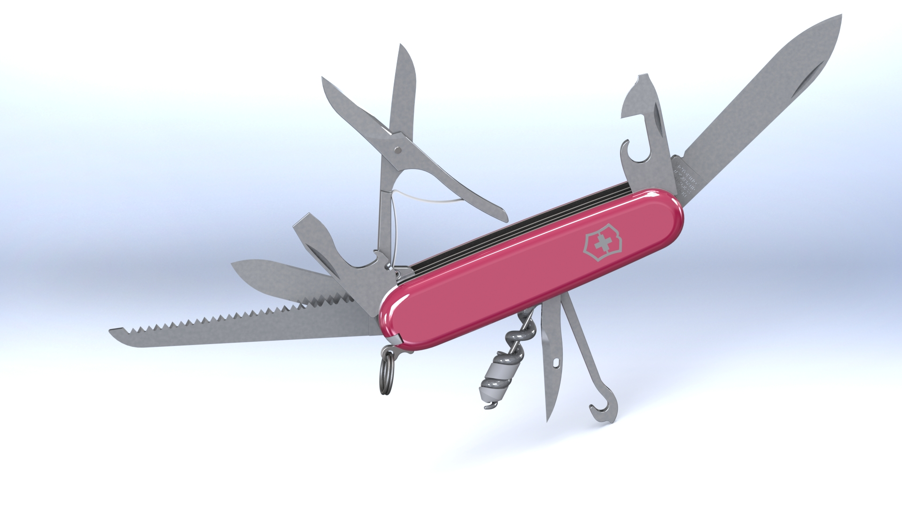
Victorinox Huntsman SAK
SAK Kit (Victorinox Swiss Army Knife) model 5042 Huntsman, from 1992,. Includes the Maglite Solitarire torch and a Recta ruler-compass-thermometer.
View Project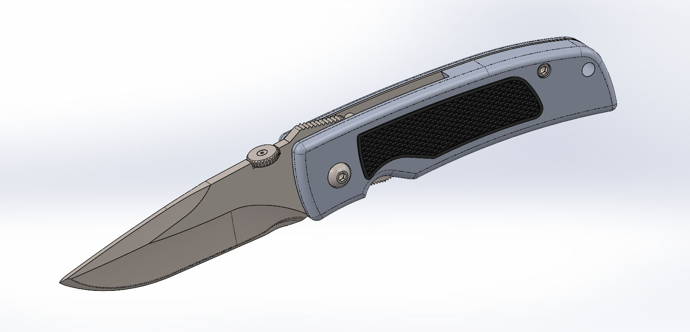
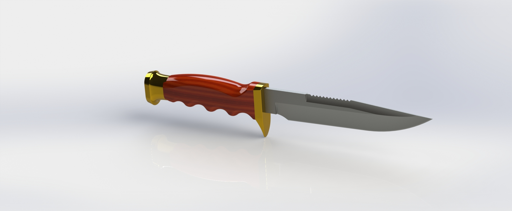
Muela Ranger
One of the best utility knives from the well known spanish brand Muela. See: https://muela.eu/productos/172/cuchillo-bowie-ranger14r-muela
View Project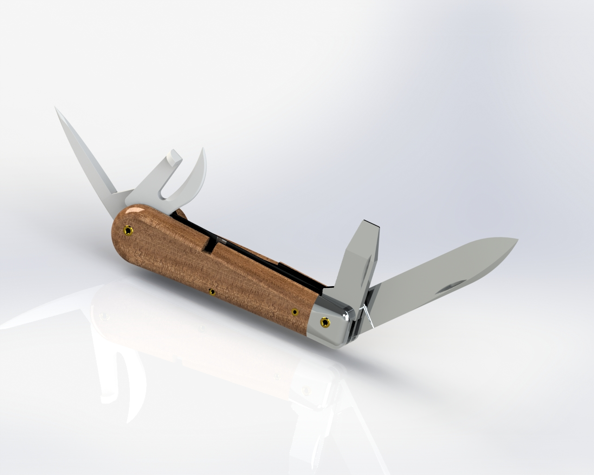
Victorinox SAK 1890
From SAKWiki.com: The Swiss Soldier Knife was the Victorinox knife that started it all for the Swiss company, and country. This was the first Swiss Army Knife built under contract for the Swiss Army starting in 1891. The Soldier Knife was issued to enlisted officers and soldiers as a rifle maintenance tool, as well as having a can-opener for ration tins. This multi-blade knife defined by it's quality construction and incredible utility would go on to define the Victorinox company and even the Swiss nation for the next century and beyond. This original model with only small updates was issued for an incredible 50+ years until 1951, at which time a new design for the Soldier Knife was adopted.
View Project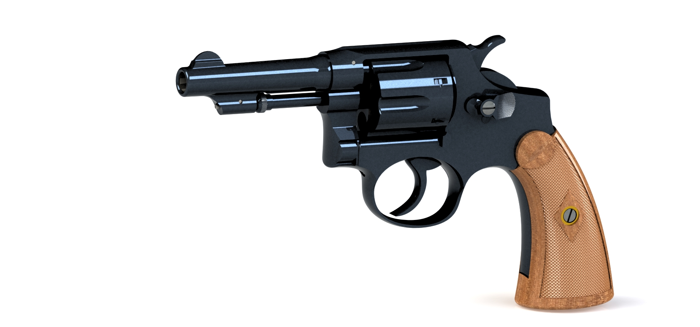
Orbea Hnos 92
Orbea Hermanos model 92 revolver, cal. .32 S&W Long (ca.1920) Revolver from Orbea Hermanos factory, in Eibar, Spain. Chambered in this case for .32 S&W Long rounds, is a copy of Smith & Wesson Model 1905 "Military & Police" See http://historiadelasarmasdefuego.blogspot.com.uy/2009/02/revolveres-orbea-mod-1873-1914-y-38-esp.html
View Project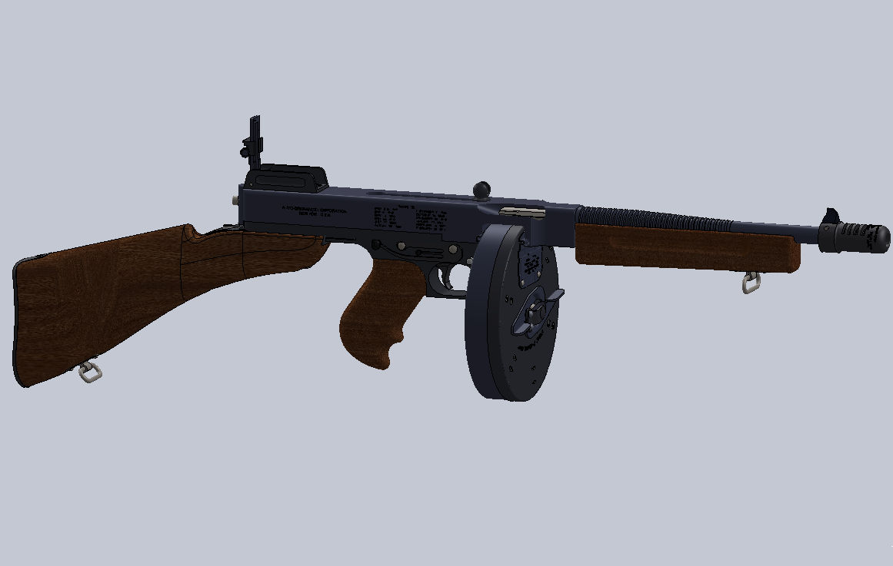
Thompson M1928A1
Thompson .45 ACP cal., model M1928A1 Sub Machine Gun, includes 20, 30 and 50 rds magazines, and original factory blueprints.
View Project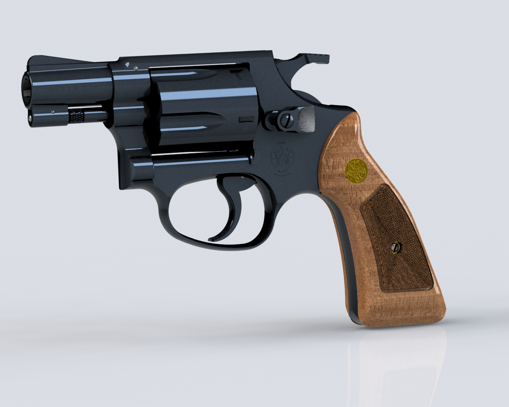
Smith & Wesson model 36
Smith & Wesson "Chiefs Special", Model 36, caliber .38 SPL, barrel 3", frame type J. The Chiefs Special was the first 5-shot J-frame .38 Special revolver produced by Smith & Wesson. I would be willing to suggest that it is the most influential compact revolver design of the 20th Century.
View Project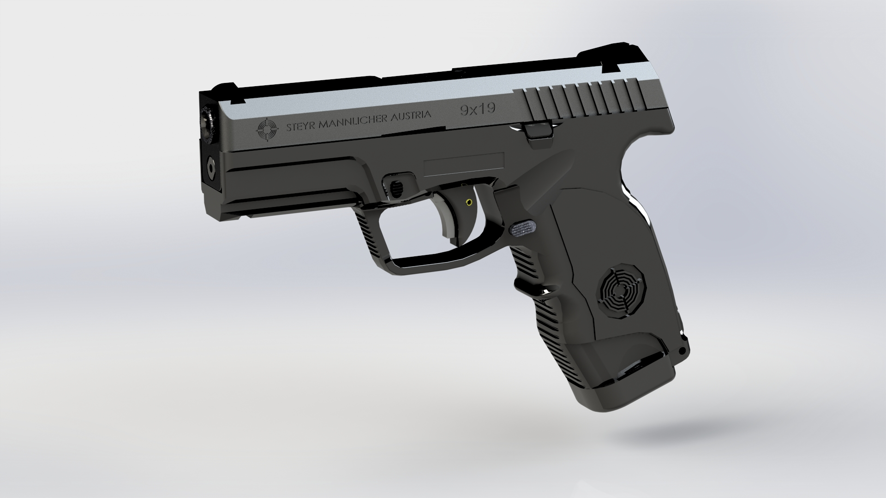